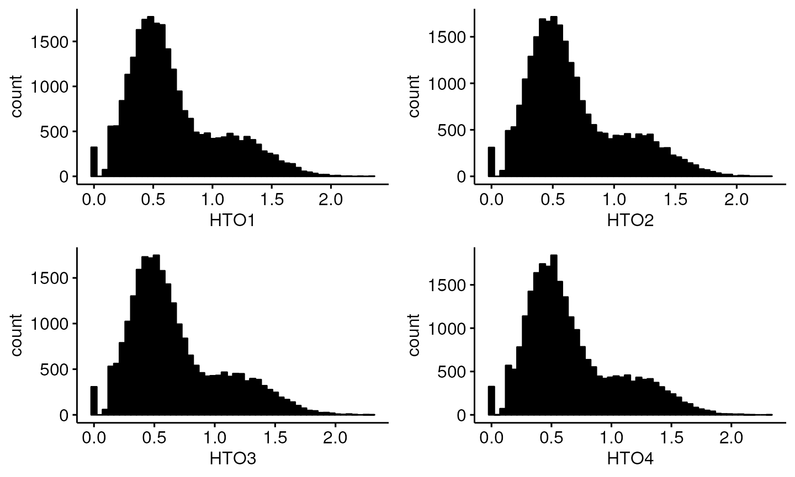

Simulated benchmarking of hashing based algorithms
Michael Lynch
2023-06-21
Source:vignettes/hashing_benchmarking.Rmd
hashing_benchmarking.Rmd
library(demuxSNP)
library(ComplexHeatmap)
library(viridisLite)
library(ggpubr)
library(dittoSeq)
library(utils)
library(EnsDb.Hsapiens.v86)Benchmarking cell hashing based methods
Testing algorithms on real data is a key step to evaluating their true performance. Real data includes nuances and factors which may not have been foreseen when developing the algorithm. However, in scRNAseq, the cost associated with running benchmark limits the amount of suitable benchmarking data. To overcome this, with the added benefit of hindsight, we simulate data to examine algorithm performance under specific conditions, mostly around reducing hashing quality.
short example:
mat<-logimat(ngroups=2,nsinglet=c(20,20),ndoub=10,nneg=4)
library(ComplexHeatmap)
Heatmap(mat)
counts<-draw_counts(size_sig=10,size_bg = 10,mu_sig = rep(20,2),mu_bg = rep(5,2),mat=mat,seed=1)
Heatmap(counts)
mat<-logimat(ngroups=4,nsinglet=c(5000,5000,5000,5000),ndoub=2500,nneg=2500)
library(ComplexHeatmap)
#Heatmap(mat)
counts<-draw_counts(size_sig=10,size_bg = 10,mu_sig = rep(20,4),mu_bg = rep(5,4),mat=mat,seed=1)
#Heatmap(counts)
counts4<-counts
dim(counts4)
#> [1] 4 25000
mat<-logimat(ngroups=8,nsinglet=rep(2500,8),ndoub=2500,nneg=2500)
library(ComplexHeatmap)
#Heatmap(mat)
counts<-draw_counts(size_sig=10,size_bg = 10,mu_sig = rep(20,8),mu_bg = rep(5,8),mat=mat,seed=1)
#Heatmap(counts)
counts8<-counts
dim(counts8)
#> [1] 8 25000
library(SingleCellExperiment)
h4<-SingleCellExperiment(list(counts=counts4))
h8<-SingleCellExperiment(list(counts=counts8))
sce4<-SingleCellExperiment(list(counts=matrix(nrow=3,ncol=ncol(h4))))
sce8<-SingleCellExperiment(list(counts=matrix(nrow=3,ncol=ncol(h8))))
altExp(sce4,"HTO")<-h4
#> Warning in .check_altexp_columns(x, value, withDimnames = withDimnames, : 'colnames(value)' are not the same as 'colnames(x)' for 'altExp<-'.
#> This will be an error in the next release of Bioconductor.
sce4$hashtag<-colnames(h4)
altExp(sce8,"HTO")<-h8
#> Warning in .check_altexp_columns(x, value, withDimnames = withDimnames, : 'colnames(value)' are not the same as 'colnames(x)' for 'altExp<-'.
#> This will be an error in the next release of Bioconductor.
sce8$hashtag<-colnames(h8)
library(CiteFuse)
sce4 <- normaliseExprs(sce = sce4,
altExp="HTO",
transform = "log")
sce4<-crossSampleDoublets(sce4)
#> number of iterations= 131
#> number of iterations= 137
#> number of iterations= 131
#> number of iterations= 137
library(dplyr)
sce4$citefuse<-recode(sce4$doubletClassify_between_label,negative="Negative",'1'="Hashtag1",'2'="Hashtag2",'3'="Hashtag3",'4'="Hashtag4",'doublet/multiplet'="Doublet")
table(sce4$citefuse)
#>
#> Doublet Hashtag1 Hashtag2 Hashtag3 Hashtag4 Negative
#> 1447 3985 3946 3672 3942 8008
sum(sce4$hashtag==sce4$citefuse)/length(sce4$hashtag)
#> [1] 0.73072
library(CiteFuse)
sce8 <- normaliseExprs(sce = sce8,
altExp="HTO",
transform = "log")
sce8<-crossSampleDoublets(sce8)
#> number of iterations= 71
#> number of iterations= 69
#> number of iterations= 77
#> number of iterations= 71
#> number of iterations= 74
#> number of iterations= 71
#> number of iterations= 67
#> number of iterations= 67
library(dplyr)
sce8$citefuse<-recode(sce8$doubletClassify_between_label,negative="Negative",'1'="Hashtag1",'2'="Hashtag2",'3'="Hashtag3",'4'="Hashtag4",'5'="Hashtag5",'6'="Hashtag6",'7'="Hashtag7",'8'="Hashtag8",'doublet/multiplet'="Doublet")
table(sce8$citefuse)
#>
#> Doublet Hashtag1 Hashtag2 Hashtag3 Hashtag4 Hashtag5 Hashtag6 Hashtag7
#> 1059 1755 1618 1754 1730 1714 1751 1821
#> Hashtag8 Negative
#> 1813 9985
sum(sce8$hashtag==sce8$citefuse)/length(sce8$hashtag)
#> [1] 0.64924
library(demuxmix)
#dmm<-demuxmix(as.matrix(counts(h4)),model = "naive")
dmm<-demuxmix(as.matrix(counts(h4)),model = "naive")
dmmlabels<-dmmClassify(dmm)
dmmlabels$HTO[dmmlabels$Type=="negative"]<-"Negative"
dmmlabels$HTO[dmmlabels$Type=="multiplet"]<-"Doublet"
dmmlabels$HTO<-recode(dmmlabels$HTO,HTO1="Hashtag1",HTO2="Hashtag2",HTO3="Hashtag3",HTO4="Hashtag4",HTO5="Hashtag5",HTO6="Hashtag6",HTO7="Hashtag7",HTO8="Hasthag8")
sce4$dmm<-dmmlabels$HTO
sum(sce4$hashtag==sce4$dmm)/ncol(sce4)
#> [1] 0.7324
library(ggplot2); library(ggpubr);library(Seurat)
df<-as.data.frame(t(counts(altExp(sce4))))
#df<-log(df)
df <- as.data.frame(NormalizeData(df, normalization.method = "CLR"))
myplots <- list()
for (i in seq_along(colnames(df))) {
tag<-colnames(df)[i]
plotx<-gghistogram(df,x=tag,fill ="black",palette = "lancet",alpha=1,bins=50)
myplots[[i]]<-plotx
}
library(gridExtra)
do.call(grid.arrange,myplots) # Session Info
sessionInfo()
#> R version 4.3.1 (2023-06-16)
#> Platform: x86_64-pc-linux-gnu (64-bit)
#> Running under: Ubuntu 22.04.2 LTS
#>
#> Matrix products: default
#> BLAS: /usr/lib/x86_64-linux-gnu/openblas-pthread/libblas.so.3
#> LAPACK: /usr/lib/x86_64-linux-gnu/openblas-pthread/libopenblasp-r0.3.20.so; LAPACK version 3.10.0
#>
#> locale:
#> [1] LC_CTYPE=en_US.UTF-8 LC_NUMERIC=C
#> [3] LC_TIME=en_US.UTF-8 LC_COLLATE=en_US.UTF-8
#> [5] LC_MONETARY=en_US.UTF-8 LC_MESSAGES=en_US.UTF-8
#> [7] LC_PAPER=en_US.UTF-8 LC_NAME=C
#> [9] LC_ADDRESS=C LC_TELEPHONE=C
#> [11] LC_MEASUREMENT=en_US.UTF-8 LC_IDENTIFICATION=C
#>
#> time zone: UTC
#> tzcode source: system (glibc)
#>
#> attached base packages:
#> [1] grid stats4 stats graphics grDevices utils datasets
#> [8] methods base
#>
#> other attached packages:
#> [1] gridExtra_2.3 SeuratObject_4.1.3
#> [3] Seurat_4.3.0 demuxmix_1.2.0
#> [5] dplyr_1.1.2 CiteFuse_1.12.0
#> [7] EnsDb.Hsapiens.v86_2.99.0 dittoSeq_1.12.0
#> [9] ggpubr_0.6.0 ggplot2_3.4.2
#> [11] viridisLite_0.4.2 ComplexHeatmap_2.16.0
#> [13] demuxSNP_0.99.10 ensembldb_2.24.0
#> [15] AnnotationFilter_1.24.0 GenomicFeatures_1.52.0
#> [17] AnnotationDbi_1.62.1 VariantAnnotation_1.46.0
#> [19] Rsamtools_2.16.0 Biostrings_2.68.1
#> [21] XVector_0.40.0 SingleCellExperiment_1.22.0
#> [23] SummarizedExperiment_1.30.2 Biobase_2.60.0
#> [25] GenomicRanges_1.52.0 GenomeInfoDb_1.36.0
#> [27] IRanges_2.34.0 S4Vectors_0.38.1
#> [29] BiocGenerics_0.46.0 MatrixGenerics_1.12.2
#> [31] matrixStats_1.0.0
#>
#> loaded via a namespace (and not attached):
#> [1] segmented_1.6-4 spatstat.sparse_3.0-1
#> [3] fs_1.6.2 ProtGenerics_1.32.0
#> [5] bitops_1.0-7 httr_1.4.6
#> [7] RColorBrewer_1.1-3 doParallel_1.0.17
#> [9] ggsci_3.0.0 sctransform_0.3.5
#> [11] tools_4.3.1 backports_1.4.1
#> [13] utf8_1.2.3 R6_2.5.1
#> [15] lazyeval_0.2.2 uwot_0.1.14
#> [17] rhdf5filters_1.12.1 GetoptLong_1.0.5
#> [19] sp_1.6-1 withr_2.5.0
#> [21] prettyunits_1.1.1 bayesm_3.1-5
#> [23] progressr_0.13.0 cli_3.6.1
#> [25] textshaping_0.3.6 spatstat.explore_3.2-1
#> [27] labeling_0.4.2 sass_0.4.6
#> [29] spatstat.data_3.0-1 robustbase_0.99-0
#> [31] randomForest_4.7-1.1 pbapply_1.7-0
#> [33] ggridges_0.5.4 pkgdown_2.0.7
#> [35] systemfonts_1.0.4 dbscan_1.1-11
#> [37] parallelly_1.36.0 BSgenome_1.68.0
#> [39] limma_3.56.2 RSQLite_2.3.1
#> [41] generics_0.1.3 shape_1.4.6
#> [43] BiocIO_1.10.0 combinat_0.0-8
#> [45] spatstat.random_3.1-5 ica_1.0-3
#> [47] car_3.1-2 Matrix_1.5-4.1
#> [49] fansi_1.0.4 abind_1.4-5
#> [51] lifecycle_1.0.3 yaml_2.3.7
#> [53] edgeR_3.42.4 carData_3.0-5
#> [55] rhdf5_2.44.0 BiocFileCache_2.8.0
#> [57] Rtsne_0.16 blob_1.2.4
#> [59] promises_1.2.0.1 dqrng_0.3.0
#> [61] crayon_1.5.2 miniUI_0.1.1.1
#> [63] lattice_0.21-8 beachmat_2.16.0
#> [65] cowplot_1.1.1 KEGGREST_1.40.0
#> [67] pillar_1.9.0 knitr_1.43
#> [69] metapod_1.8.0 rjson_0.2.21
#> [71] future.apply_1.11.0 codetools_0.2-19
#> [73] leiden_0.4.3 glue_1.6.2
#> [75] data.table_1.14.8 vctrs_0.6.3
#> [77] png_0.1-8 gtable_0.3.3
#> [79] kernlab_0.9-32 cachem_1.0.8
#> [81] xfun_0.39 mime_0.12
#> [83] S4Arrays_1.0.4 tidygraph_1.2.3
#> [85] survival_3.5-5 pheatmap_1.0.12
#> [87] iterators_1.0.14 statmod_1.5.0
#> [89] bluster_1.10.0 ellipsis_0.3.2
#> [91] fitdistrplus_1.1-11 ROCR_1.0-11
#> [93] nlme_3.1-162 bit64_4.0.5
#> [95] RcppAnnoy_0.0.20 progress_1.2.2
#> [97] filelock_1.0.2 rprojroot_2.0.3
#> [99] tensorA_0.36.2 bslib_0.5.0
#> [101] irlba_2.3.5.1 KernSmooth_2.23-21
#> [103] colorspace_2.1-0 DBI_1.1.3
#> [105] tidyselect_1.2.0 bit_4.0.5
#> [107] compiler_4.3.1 curl_5.0.1
#> [109] compositions_2.0-6 BiocNeighbors_1.18.0
#> [111] xml2_1.3.4 desc_1.4.2
#> [113] DelayedArray_0.26.3 plotly_4.10.2
#> [115] rtracklayer_1.60.0 scales_1.2.1
#> [117] lmtest_0.9-40 DEoptimR_1.0-14
#> [119] rappdirs_0.3.3 goftest_1.2-3
#> [121] stringr_1.5.0 digest_0.6.31
#> [123] spatstat.utils_3.0-3 mixtools_2.0.0
#> [125] rmarkdown_2.22 htmltools_0.5.5
#> [127] pkgconfig_2.0.3 sparseMatrixStats_1.12.0
#> [129] highr_0.10 dbplyr_2.3.2
#> [131] fastmap_1.1.1 rlang_1.1.1
#> [133] GlobalOptions_0.1.2 htmlwidgets_1.6.2
#> [135] shiny_1.7.4 DelayedMatrixStats_1.22.1
#> [137] farver_2.1.1 jquerylib_0.1.4
#> [139] zoo_1.8-12 jsonlite_1.8.5
#> [141] BiocParallel_1.34.2 BiocSingular_1.16.0
#> [143] RCurl_1.98-1.12 magrittr_2.0.3
#> [145] scuttle_1.10.1 GenomeInfoDbData_1.2.10
#> [147] patchwork_1.1.2 Rhdf5lib_1.22.0
#> [149] munsell_0.5.0 Rcpp_1.0.10
#> [151] reticulate_1.30 viridis_0.6.3
#> [153] stringi_1.7.12 ggraph_2.1.0
#> [155] zlibbioc_1.46.0 MASS_7.3-60
#> [157] plyr_1.8.8 listenv_0.9.0
#> [159] parallel_4.3.1 ggrepel_0.9.3
#> [161] deldir_1.0-9 graphlayouts_1.0.0
#> [163] splines_4.3.1 tensor_1.5
#> [165] hms_1.1.3 circlize_0.4.15
#> [167] locfit_1.5-9.8 igraph_1.5.0
#> [169] spatstat.geom_3.2-1 ggsignif_0.6.4
#> [171] reshape2_1.4.4 biomaRt_2.56.1
#> [173] ScaledMatrix_1.8.1 XML_3.99-0.14
#> [175] evaluate_0.21 scran_1.28.1
#> [177] httpuv_1.6.11 foreach_1.5.2
#> [179] tweenr_2.0.2 RANN_2.6.1
#> [181] tidyr_1.3.0 purrr_1.0.1
#> [183] polyclip_1.10-4 scattermore_1.2
#> [185] future_1.32.0 clue_0.3-64
#> [187] ggforce_0.4.1 rsvd_1.0.5
#> [189] xtable_1.8-4 broom_1.0.5
#> [191] restfulr_0.0.15 later_1.3.1
#> [193] rstatix_0.7.2 class_7.3-22
#> [195] ragg_1.2.5 tibble_3.2.1
#> [197] memoise_2.0.1 GenomicAlignments_1.36.0
#> [199] cluster_2.1.4 globals_0.16.2